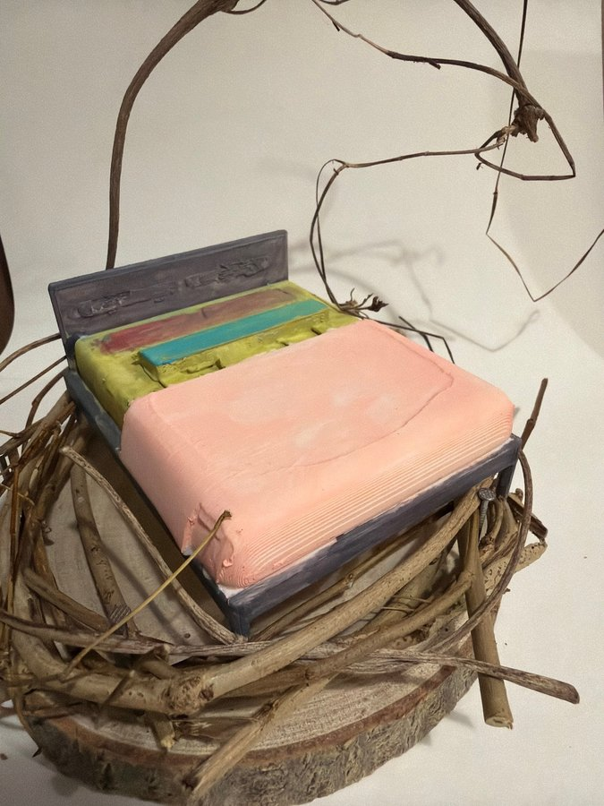

本網站為藝術科技項目之詮釋性預測（築巢 Weaving Home 藝術詮釋），並非心理／臨床診斷。


修正頂視圖以一張大床佔據巢中央，標籤列出雙人床、粉紅色被鋪、藍色枕頭同灰色床頭板；上方另有灰色區塊代表懸掛藤蔓弧線。床四周只剩窄窄一圈木面，再由枝條包住。
相片清楚見到寬床、粉紅覆蓋、灰藍床架同幾條彩色床頭墊；頂視圖稱其中為藍色枕頭。至於灰色區塊，實物係由上方彎落嘅幼枝／藤蔓，唔係實心家具，屬示意畫法而非形狀完全一致。
巢嘅頂視圖
修正頂視圖以一張大床佔據巢中央，標籤列出雙人床、粉紅色被鋪、藍色枕頭同灰色床頭板；上方另有灰色區塊代表懸掛藤蔓弧線。床四周只剩窄窄一圈木面，再由枝條包住。
相片清楚見到寬床、粉紅覆蓋、灰藍床架同幾條彩色床頭墊；頂視圖稱其中為藍色枕頭。至於灰色區塊，實物係由上方彎落嘅幼枝／藤蔓，唔係實心家具，屬示意畫法而非形狀完全一致。
屋企嘅人
（藝術詮釋）成個巢幾乎只放得落一張寬床，所以「屋企嘅人」主要以休息者嘅位置出現。頂視圖叫佢做雙人床，但一張床唔足以證明有兩個住戶；可以係一人、兩人，亦可以純粹以床代表休息。
冇枱、櫃、椅或人物，令其他生活角色都保持空白。較穩妥嘅解讀係：作品將人最脆弱、最需要被承托嘅睡眠狀態放喺正中央，而唔對身份作推斷。
性格
（藝術詮釋）粉紅大面積覆蓋同灰藍床架形成冷暖對比，床頭再加入黃、紅、藍綠色長條，令簡單構圖有一排細小記號。表面可見手壓紋、接縫同不完全平整嘅邊，作品冇隱藏製作痕跡。
呢種視覺語言可以形容為直接、柔軟同重視顏色層次，但唔應轉化成對創作者溫柔、內向或其他人格嘅診斷。
動機
（藝術詮釋）作品將「家」收窄到一張床：有床架承托、有被鋪覆蓋、有床頭方向，再有枝圈同藤蔓包圍。其他功能全部退場，令休息、安全同被保護成為唯一焦點。
床幾乎填滿木片，好似話即使地方有限，都要先留住一個可以瞓低嘅位置。呢個係構圖所帶出嘅藝術命題，唔代表真實住戶正面對任何特定處境。
需求
（藝術詮釋）最具體嘅需要係身體承托、柔軟覆蓋同清楚嘅睡眠界線。灰藍床架將床固定，粉紅被鋪遮住大部分床面，彩色床頭墊標示靠頭位置；枝條就喺外面再圍多一層。
上方藤蔓既似遮蔭亦似未封閉嘅頂篷，將保護同暴露同時放入畫面。呢啲只係對物件功能嘅藝術閱讀，唔係醫療、心理或居住需要評估。
經歷
（藝術詮釋）可見材料經過切割、塑形、壓紋同編織：樹幹切片變成地台，幼枝交疊成牆，模型床再放入中央。床面接縫同枝條不規則形態，都保留咗逐步搭建嘅痕跡。
呢種「先搭一處可休息地方」嘅畫面可以令人聯想到暫時落腳或生活被收細，但相片冇提供人物歷史，所以唔能夠聲稱有人曾遷徙、受創或經歷住房問題。
證據摘要
| 物件 | 推論 |
|---|---|
| 中央寬床同灰藍床架 | 睡眠家具佔據大部分內圈，係明確視覺核心。 |
| 大幅粉紅色覆蓋 | 頂視圖稱被鋪；相片亦見到柔軟覆蓋感同壓紋。 |
| 床頭黃、紅、藍綠長條 | 提供色彩層次；頂視圖稱藍色枕頭，但相片似多條墊件。 |
| 灰藍床頭板 | 清楚標示床嘅方向同承托邊界。 |
| 上方彎曲幼枝／藤蔓 | 頂視圖以灰色區塊簡化表示；實物係懸空弧線，兩者外形並不完全一致。 |
| 木片底座同環狀乾枝 | 床被放入可見天然材料圍成嘅有限範圍。 |
信心同限制
對床、被鋪、床架、枝圈同位置有高信心；對枕頭數量、床實際使用人數同藤蔓象徵只屬低至中等信心。頂視圖嘅灰色實心示意同相片中幼枝形態有差異，已明確限定。全文係藝術性、非診斷解讀。